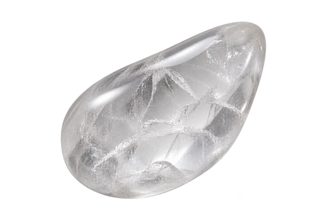
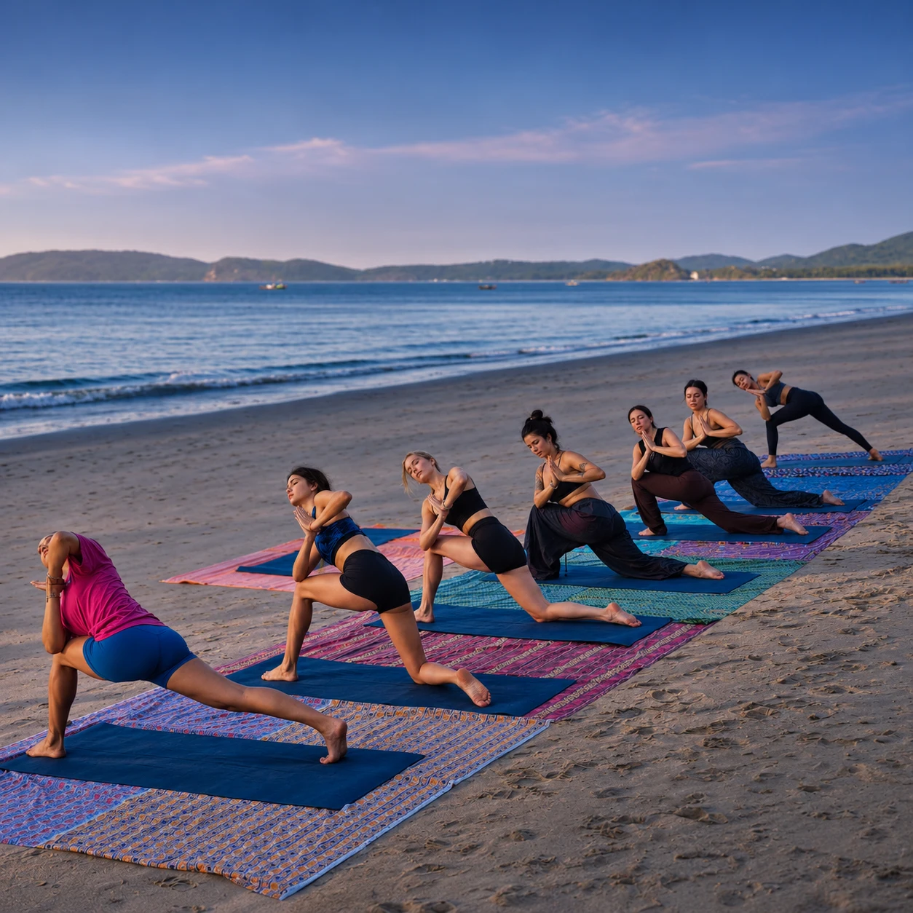

Wellness
Move. Release. Restore.
คืนพื้นที่ให้กายและใจ
ในช่วงเวลาที่เป็นของคุณ

Your time.
Your own rhythm.
สัมผัส การเคลื่อนไหว และการพัก
เริ่มจากสิ่งที่คุณอยากให้ตัวเองในวันนี้
Signature Facial Ritual
ให้เวลากับการดูแลใบหน้า ศีรษะ คอ และบ่าไหล่ ในบรรยากาศสงบและเป็นส่วนตัว
A quieter
kind of care.
การดูแลใบหน้าและช่วงเวลาแห่งการผ่อนคลาย
ตั้งแต่สัมผัสแรก จนถึงชาถ้วยสุดท้าย
01Consultation & preparationปรึกษาและเตรียมผิว+
เริ่มจากพูดคุยเรื่องผิวและความต้องการ แล้วทำความสะอาดอย่างอ่อนโยน
02Facial massage & sculptingสัมผัสที่ค่อย ๆ คลาย+
นวดใบหน้าและดูแลแนวกรอบหน้าในจังหวะที่เหมาะกับคุณ
03Bojin facial therapyการดูแลด้วยเทคนิค Bojin+
ผสานเทคนิค Bojin เข้ากับช่วงเวลาการดูแลใบหน้า
04Facial cuppingจังหวะที่เบาและพอดี+
ดูแลด้วย Facial Cupping ตามความเหมาะสมของผิว
05Eye therapyพักบริเวณรอบดวงตา+
ดูแลรอบดวงตา หน้าผาก และขมับด้วยสัมผัสอ่อนโยน
06Head, neck & shoulderคืนพื้นที่ให้ความสบาย+
ดูแลศีรษะ คอ และบ่าไหล่ เป็นส่วนหนึ่งของการพักผ่อน
07Hydro jelly maskช่วงเวลาของความชุ่มชื้น+
ปิดผิวด้วยเจลมาสก์และเว้นเวลาให้คุณได้พัก
08Final care & relaxationจบด้วยความละมุน+
บำรุงผิวขั้นสุดท้าย พร้อมพักและจิบ Wellness Tea
Move with
your breath.
การฝึกที่ออกแบบตามความต้องการ
และระดับการเคลื่อนไหวของคุณ
พื้นที่สำหรับจังหวะของคุณ
เคลื่อนไหวและเรียนรู้ร่วมกัน

เปิดรับลม กลับมาอยู่กับลมหายใจ
ภาพประกอบบรรยากาศของประสบการณ์
Follow your
own flow.
01Short consultationพูดคุยก่อนเริ่ม
บอกความต้องการ ประสบการณ์ และข้อจำกัดในการเคลื่อนไหว
02Meditationกลับมาอยู่กับตัวเอง
เริ่มต้นด้วยช่วงเวลานิ่ง ๆ และการรับรู้ตัว
03Breathworkสังเกตลมหายใจ
ค่อย ๆ รับรู้ลมหายใจในจังหวะที่สบาย
04Warm-up & mobilityเตรียมร่างกาย
เคลื่อนไหวอย่างค่อยเป็นค่อยไปก่อนเข้าสู่การฝึก
05Personalised yoga flowเคลื่อนไหวในแบบของคุณ
ลำดับการฝึกปรับตามระดับและสภาวะร่างกายของผู้เรียน
06Stretching / deep releaseยืดและผ่อนลง
ให้เวลากับการยืดเหยียดและการคลายตัว
07Savasana / relaxationพักอยู่กับช่วงเวลานี้
ปิดท้ายด้วยท่าพักและการรับรู้ความรู้สึกหลังฝึก
ฝึกในระดับที่เหมาะกับร่างกายของคุณ
แจ้งข้อจำกัดในการเคลื่อนไหวก่อนนัดหมาย
Pause.
And simply be.
ไม่ต้องรีบไปไหน
ให้เวลากับช่วงเวลาตรงหน้า
Move.
Then restore.
ผสาน Mantra Yoga และ Facial Ritual
ให้การเคลื่อนไหวค่อย ๆ ต่อเนื่องสู่การพัก
Facial ในแพ็กเกจรวมใช้เวลา 90 นาที ส่วน Facial แบบเดี่ยวใช้เวลา 2 ชั่วโมง
A little
preparation.
แต่ละประสบการณ์ใช้เวลาต่างกันอย่างไร?
Signature Facial Ritual ใช้เวลา 2 ชั่วโมง Signature Mantra Yoga 90 นาที และ Signature Wellness Experience ประมาณ 3 ชั่วโมง สอบถามวันเวลาและรูปแบบกับ THE NAME ก่อนนัดหมาย
ถ้ามีข้อจำกัดในการเคลื่อนไหวหรือผิวแพ้ง่าย?
แจ้งรายละเอียดให้ผู้ให้บริการทราบก่อนจอง เพื่อสอบถามความเหมาะสมและสิ่งที่ควรเตรียมสำหรับประสบการณ์ที่เลือก
สถานที่และการเตรียมตัวเป็นอย่างไร?
สอบถามสถานที่ อุปกรณ์ เครื่องแต่งกาย และเงื่อนไขการนัดหมายของแต่ละบริการก่อนยืนยันการจอง